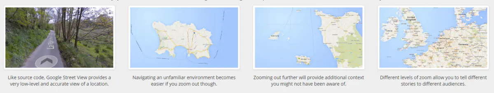
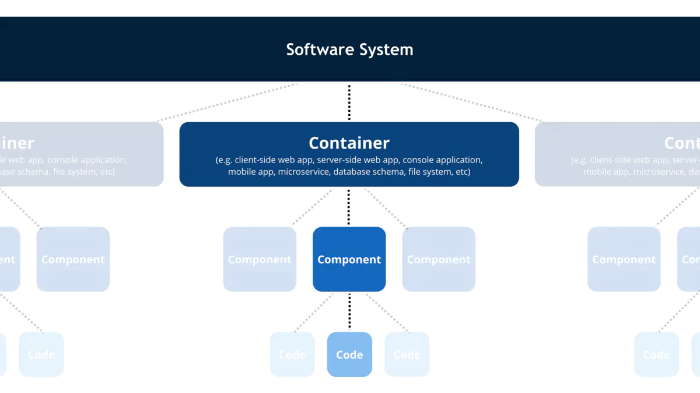
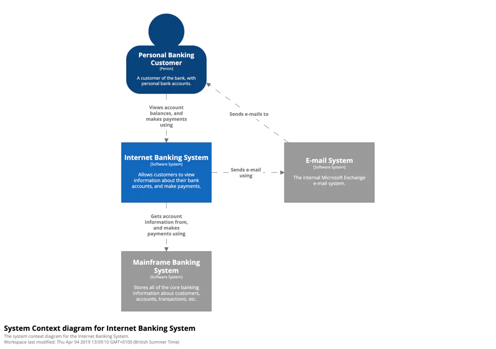

C4模型
概述
最近在开发系统中，发现需要一种方式来构建对于当前系统的理解和细化，UML是我一下子映入脑海的方式，但是很久不再接触了，刚好在前段时间看到关于C4model(官网)相关文章，刚好可以试试。
more...
架构图的主要功能是从各个角度和各个层次去描述系统的功能，主要是从宏观到微观的描述。C4 Model也是提供图形从不同的层次去描述我们的系统。主要的优势是C4 Model提供很少的抽象图形要素和图类型来描述系统，使得各个系统参与者都能很快理解系统的功能。这些图从层级上来看都是缩放的，就行谷歌地图一样

地图
为了构建实际系统的抽象。C4 Model对于系统的描述提供了四个抽象层次：

抽象
这个抽象层次里面包含5个要素
Software System：软件系统最高的抽象层次，描述了交付给用户完成用户所需功能的系统。Person：使用系统的人或者角色。Container： 容器是独立运行一些代码和数据，组合起来完成系统功能的要素。一个容器可以是Server-side web application、Client-side web application、Client-side desktop application、Mobile app、Server-side console application、Microservice、Database、Blob or content store、File system、Shell script等。Component：组件一组相关功能的封装，对外提供良好的接口。
基于这四个层次的抽象，C4 Model由4张核心图和3张附加图组成
四张核心图
4张核心图分别为系统上下文图（Context）、容器图（Container）、组件图（Component）、代码图（Code），代码图是实际的类实现，可选。
系统上下文图

系统上下文图
系统上下文图主要表述的是当前要开发的系统和周边环境的关系，包括系统和用户之间的关系和系统和周边系统的关系，在系统上下文图里，方块指代的是软件系统，蓝色表示我们关注的系统（位于中心），灰色表示我们直接依赖的系统或者依赖我们的系统，虚线框一般用于用于聚合相关元素。
系统上下文图，它展示的是系统大局景观的广角视图，主要包括关键的系统依赖和参与者，关注的重点是人和系统。
在画语境图时，要明确的标出：
- 我们构建的软件系统是什么？
- 谁用这个系统？
- 如何融入已有的IT环境？
容器图

容器图
当我们理解了当前关注的系统在整个IT环境中的地位的时候，需要将当前系统放大，观察里面的内部结构，放大后就会看到容器，如上图所示，C4模型认为系统是由容器组成的。容器图显示的是软件架构中各个独立的部分（一般是一个独立的进程），每个容器的职责和他们间是如何交互的，以及容器与其他系统是如何交互的。它显示了当前软件系统的技术选型和交互方式。它是一个简单的、以高级技术为重点的图表，对软件开发人员和支持/操作人员都很有用。
容器指的是组成软件系统的逻辑上的可执行文件或者过程。容器之间的通信一般是进程间的通信。
所以画一个容器的时候要包含：
- 名称：容器的逻辑名称（如“面向互联网的Web服务器”、“数据库”等）。
- 技术：容器的技术选择（如ApacheTomcat7等）。
- 职责：容器职责的高层次声明或清单。
之后就是画各个容器之间的通信：
- 容器之间交互的目的（如“读/写数据”、“发送报告“等）；
- 容器之间的通信方法（如Web服务、REST、Java远程方法调用、Java消息服务）；
- 容器之间的通信方式（如同步、异步、批量等）；
- 容器之间的协议和端口号（如HTTP、HTTPS、SOAP/HTTP、SMTP、FTP等）。
组件图

继续放大容器，可以看到每个容器里有哪些组件组成，组件的职责是什么，组件是如何交互的。组件主要是相关功能的聚合，提供对外的接口。
组件图就是将单个容器放大，它可以让你清晰的看到容器的关键逻辑组件、组件之间的层级关系和依赖。所以组件图要标明：
- 名称：组件的名称
- 技术：对组件的技术选择
- 职责：对组件职责的高层次的声明
代码图

代码图
代码图跟UML里面的类图很类似。除非非常重要的且还没有写出代码的组件才画代码图。
核心图主要固定了我们系统的抽象层次，方便讨论和理解。
三张扩展图
核心图让我理解了系统静态架构，三张扩展图，可以让我们关注更多的维度。
系统景观图

系统景观图是比系统上下文图更丰富的系统级别的表达。不像上下文图只关注聚焦系统和它的直接关系，连一些间接相关的系统都会标示出来，包括那些外部系统相关的用户。系统景观图的意义在于从企业的整个IT架构来看待当前要构建的系统的功能和价值。
动态图

动态图不同于上面所有静态图的表达，它表达的系统的某个运行态，这个运行态中完成了一个用户的场景或者功能。所以一般有步骤，有顺序。而且可以在各个层级去描述这个动态图。
部署图

部署图主要描述系统在容器级别是如何实际部署到物理基础设施中的。
图形符号（Notation）
C4 模型没有预定义任何特定的符号，你在这些示例图中看到的是一个个简单的符号，适用于白板、纸张、便签、索引卡片和各种图表工具。你也可以使用 UML 作为符号，并适当使用包、组件和原型。无论你使用哪种符号，我都会建议让每个元素都包含名称、元素类型（即“人”、“软件系统”，“容器”或“组件”）、技术选型（如果有的话），以及一些描述性文字。在图表中包含如此多的文本可能看起来很不寻常，但这些附加文本有助于消除软件架构图中通常会出现的不明确的表示。
即使符号对你来说是显而易见的，仍然要确保为这些符号提供图例。图例中应该包括颜色、形状、首字母缩略词、线条样式、边框、尺寸等。理想情况下，符号应该在每个细节层次上保持一致。下面是前面显示的容器图的图例。

最后，不要忘记了标题，它应该出现在每个图表上，以明确地描述每个图表的类型和范围（例如，“网上银行系统的系统上下文图表”）。
下面有一些关于图形符号的实践推荐.
图
- 每张图都应该有个标题标明图类型和范围
- 图中需要有个图例来解释所使用的图形符号（比例 形状、颜色、边框样式等）
- 图形里面的缩写所有受众都能理解
元素
- 所有元素的类型需要被明确指定
- 所有元素都需要一个简单描述，描述其核心职能
- 所有的容器和组件都需要明确的指定技术
关系
- 所有关系线都只表示单向的关系
- 每一行都应该加上标签，标签应该与关系的方向和意图保持一致(例如依赖关系或数据流)。尽量把标签写得具体些，最好避免使用“Uses”这样的单字。
- 容器之间的关系(通常代表进程间通信)应该有明确标记的技术/协议。
更多信息
C4 模型是一种在不同抽象层次上交流软件架构的简单方法，可以向不同的受众讲述不同的故事。这也是向软件开发团队介绍（通常是重新引入）严谨和轻量级建模的一种方式。有关 C4 模型的更多信息，以及补充图（运行时和部署）的示例、符号清单、常见问题解答、会议讲座视频和工具选项，请参阅 c4model.com 。